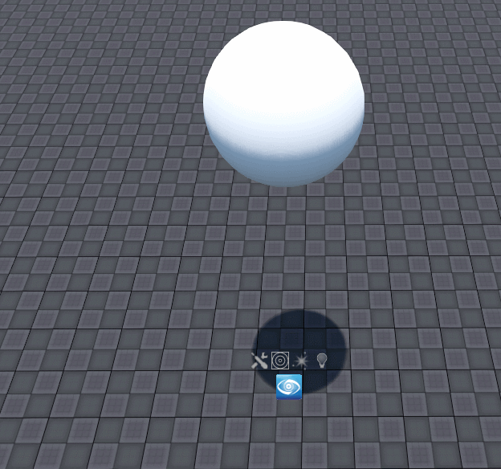
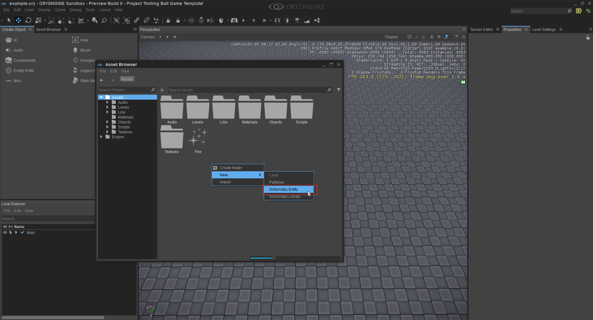
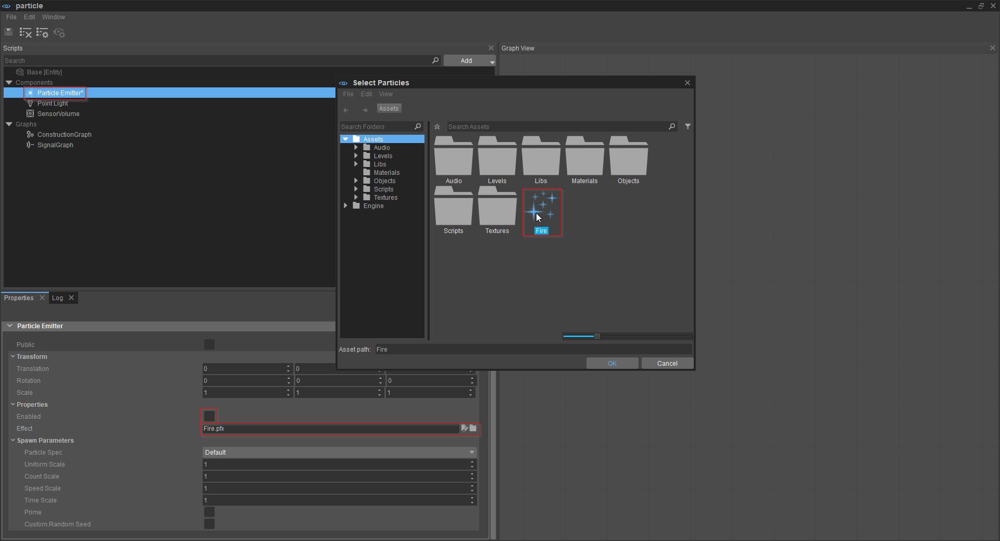
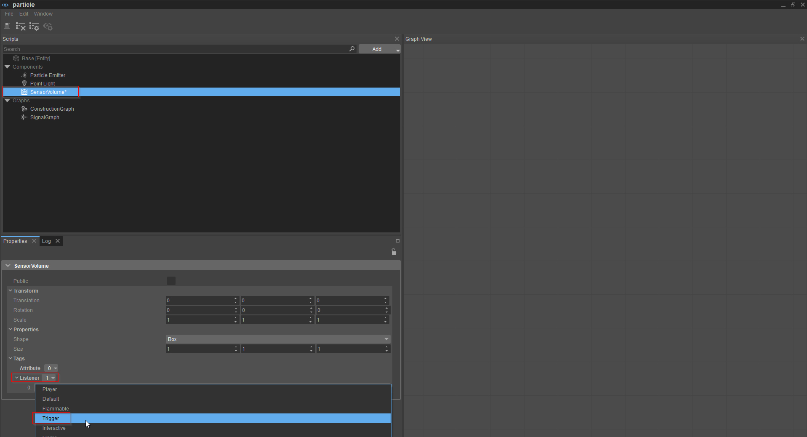
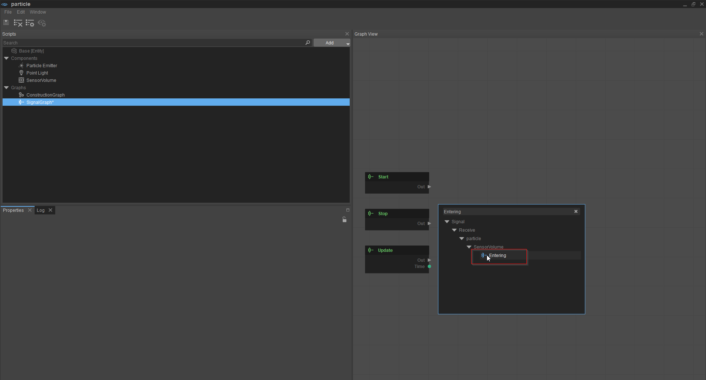
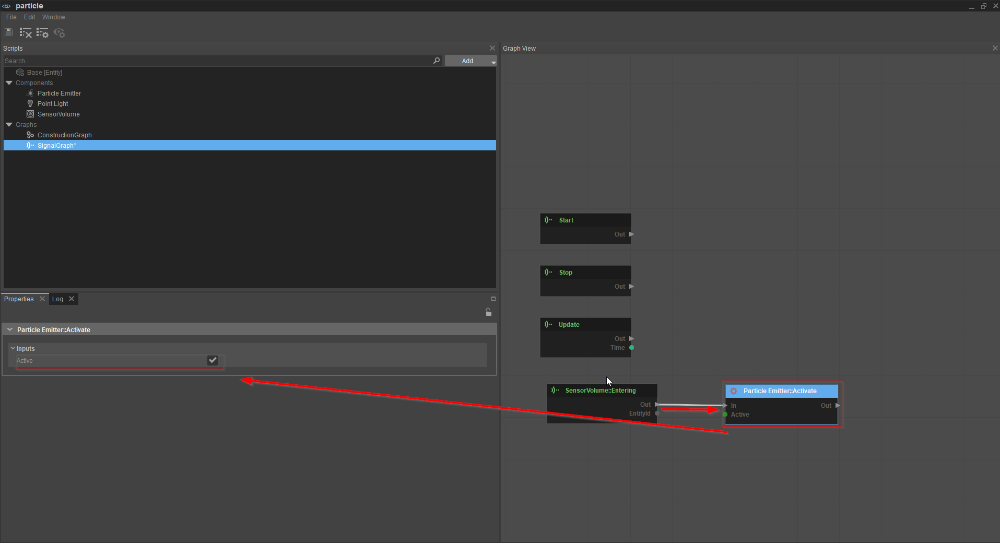
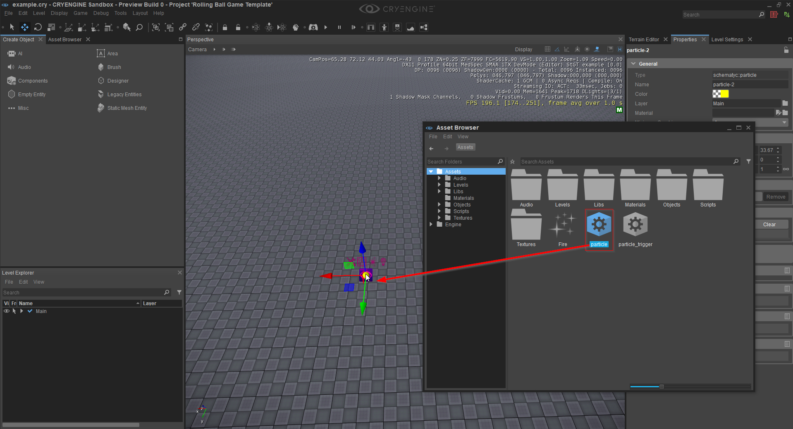
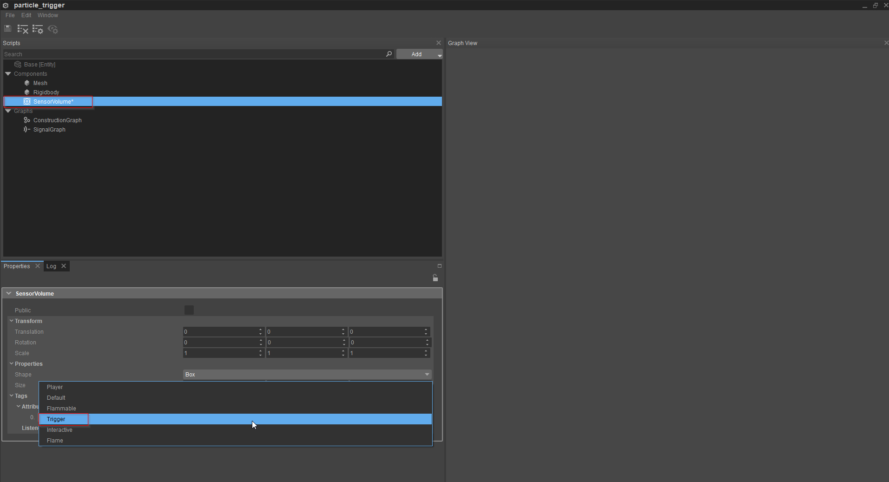
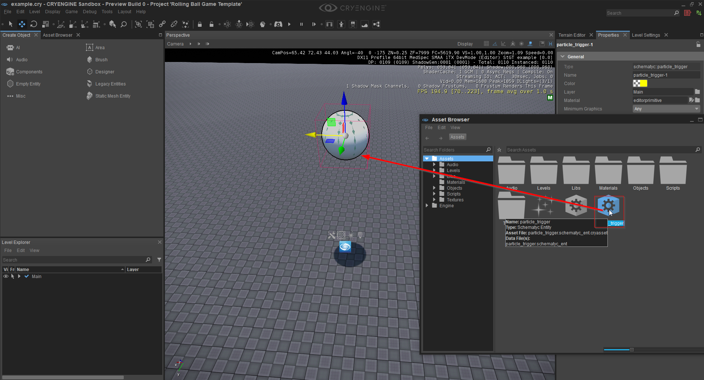
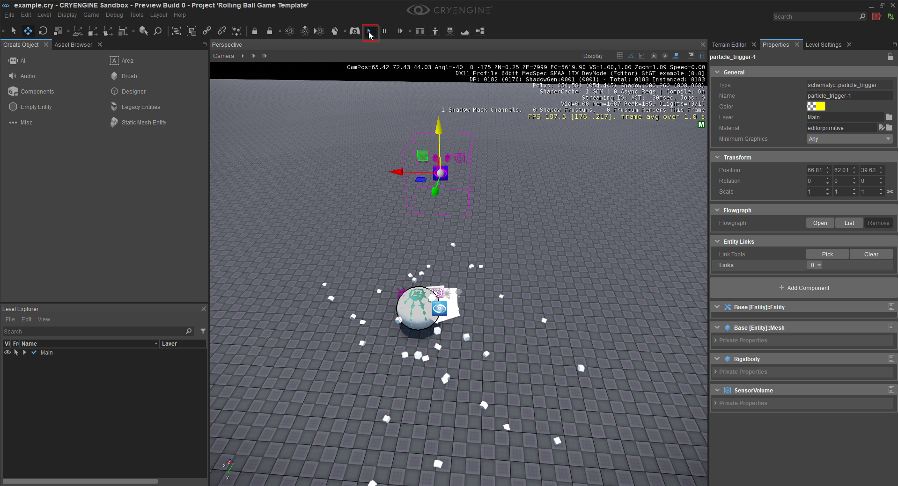

Объединение компонентов
В этом уроке показано, как комбинировать компоненты. Комбинирование компонентов позволяет создавать удивительные эффекты и, таким образом, можно легко создавать сложные объекты. В приведенном ниже примере создается эффект частиц (огонь), который вызывается падающим объектом.
Однако, прежде чем начать, вы должны знать, что в этом руководстве мы работаем с Schematyc, поэтому, если вы не знакомы с Schematyc или, возможно, вам просто нужно освежить память, вы можете найти документацию Schematyc. здесь.
В этом уроке мы также будем использовать следующие компоненты: Урок - Сетчатый компонент, Урок - Компонент твердого тела, Урок — Компонент эмиттера частиц, Урок — Компонент точечного освещенияи Урок — Компонент SensorVolume. Следовательно, мы рекомендуем вам сначала ознакомиться с каждым из этих компонентов, прежде чем приступать к работе с этим руководством.
Вам также потребуется скачать fire.pfx в папку Asset вашего проекта (достаточно любого места в папке). Обычно этот файл загружается в папку «Загрузки», поэтому вам нужно будет скопировать/переместить его в папку «Ресурсы» вашего проекта.
Наконец, изображение ниже показывает, как будет выглядеть результат этого урока.

Во-первых, нам нужно создать сущности для этого урока, и поскольку мы собираемся использовать Схема, то нам нужно создать два новых схематических объекта.
- Откройте браузер ресурсов Инструменты -> Обозреватель ресурсов и щелкните правой кнопкой мыши где-нибудь в окне Обозревателя ресурсов. Создайте два новых «объекта схемы», один с именем «частица», а другой «particle_trigger». После присвоения сущности имени всплывающее окно спросит, хотите ли вы выбрать базу, в этом случае мы этого не делаем, поэтому скажите «нет».

- Дважды щелкните объект с именем «частица», откроется редактор схем. Эта сущность будет частицей на земле, которая сработает, когда объект упадет в нее.
- Теперь нам нужно добавить несколько компонентов. Нажмите кнопку «Добавить» (посередине вверху) и выберите «Компонент» в контекстном меню. Теперь добавьте к объекту следующие компоненты: излучатель частиц, точечный свет и объем датчика. Эти компоненты затем будут видны в категории «Компоненты» вашего объекта.
- Теперь мы добавим эффект частицы (частицу огня, которую вы загрузили ранее в папку ресурсов вашего проекта) к объекту «частица». Сначала выберите компонент эмиттера частиц, затем перейдите в браузер ресурсов. Эффект огня должен быть виден в Обозревателе объектов, но если его нет, перейдите в Редактировать -> Создать/восстановить все метаданные, это по сути обновление.
- Щелкните значок папки рядом с атрибутом «Эффект» на вкладке «Свойства», затем щелкните эффект огня (в браузере ресурсов), при этом файл fire.pfx поместится в поле «Эффект», а затем обязательно нажмите кнопку OK в браузере ресурсов. Наконец, обязательно снимите флажок с атрибута «Включено» у излучателя частиц — это предотвратит запуск эффекта по умолчанию.

- Выберите компонент «Том сенсора» и добавьте к нему прослушиватель триггера (мы хотим знать, когда другой том сенсора с этим тегом контактирует с томом сенсора, чтобы мы могли активировать эффект частиц).

- Сущность «частица» теперь завершена, поэтому мы можем начать создавать для нее логику. В категории «Графики» нажмите SignalGraph. Теперь на вкладке «Просмотр графика» мы можем приступить к построению логики. Логика сущности «частицы» довольно проста: если что-то попадает в объем нашего датчика, мы хотим, чтобы эмиттер частиц был активирован. Итак, щелкните правой кнопкой мыши в представлении графика, в строке поиска введите «Ввод» и выберите узел «Ввод».

- Теперь нам нужно ввести все входящие события, а также активировать излучатель частиц, если мы получим событие. Щелкните правой кнопкой мыши по графику, в строке поиска введите «Активировать» и выберите узел Активировать. Затем соедините «Out» узла SensorVolume::Entering (входной узел) с «In» узла ParticleEmitter::Activate. По умолчанию узел «Активировать» деактивирует эффект, мы хотим его активировать, поэтому выберите узел «Активировать» и установите флажок «Активный».

- Мы закончили создание сущности «частицы». Итак, закройте редактор схем, вернитесь в браузер ресурсов, а затем перетащите объект «частица» куда-нибудь на свой уровень.

- Теперь мы собираемся создать еще одну сущность — это будет шар, который падает и вызывает эффект. Перейдите в Обозреватель ресурсов и double щелкните объект "particle_trigger", откроется редактор схем. Мы снова собираемся добавить некоторые компоненты (см. шаг 3 выше для напоминания). В случае падающего объекта нам нужен компонент сетки, компонент твердого тела (чтобы объект находился под влиянием гравитации) и объем датчика, чтобы активировать объем датчика другого объекта. Наконец, мы добавим триггер в поле «Атрибут» (см. изображение ниже). Убедитесь, что выбран компонент SensorVolume, затем щелкните поле «Атрибут», нажмите «Добавить», затем разверните меню и нажмите «Триггер». Нам нужен этот атрибут Trigger, чтобы мы могли активировать эффект частиц.

- В этом примере геометрия компонента сетки и объема датчика были изменены на сферу. Для напоминания о том, как изменить геометрию сетки, см. шаг 3 в разделе Сетчатый компонент документация. Теперь объект «шар» завершен, поэтому редактор схем можно закрыть. Теперь перетащите объект «particle_trigger» из браузера ресурсов на свой уровень и поместите его немного выше объекта «частица».

- После размещения сущности «шар» вся настройка завершена. Чтобы увидеть, как работает настройка, нажмите маленькую кнопку воспроизведения в редакторе Sandbox и подождите, пока мяч не упадет на землю, чтобы увидеть эффект частиц.

- Наконец, чтобы углубить свое понимание/обучение, вы можете попытаться воспроизвести световой эффект, показанный в примере файла .*gif (вверху страницы). В этом случае найдите узел включения компонента освещения в Schematyc, затем включите свет, когда что-то попадает в объем датчика (конечно, вам нужно будет отключить свет, который включен по умолчанию).